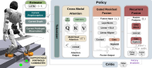

Academic Project Page
Paper
Abstract
Architecture
Method

Results
Experiments
Citation
BibTeX
If you find this work useful, please cite our paper:
Academic Project Page
Paper
Architecture

Results
Citation
If you find this work useful, please cite our paper: